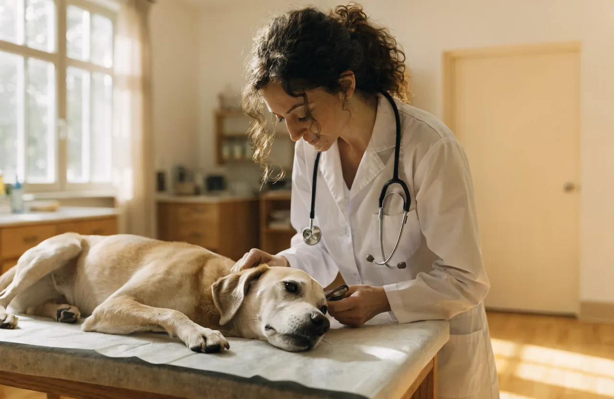

Снижение активности
Питомец стал двигаться меньше обычного — частый ранний признак недомогания.
Носимый модуль и AI спокойно следят за сном, дыханием и активностью питомца — и подсказывают раньше, чем появятся симптомы.
«Узнайте, что чувствует питомец, до того как появятся симптомы.»
Три устройства закрывают разные стороны здоровья и работают как единая система. Раскройте карточку, чтобы увидеть, что отслеживает каждое.

Постоянный мониторинг дома и на прогулке

Наблюдает за поведением, пока вас нет

Глубокие данные изнутри организма
Система ищет отклонения от нормы конкретного питомца — и подсказывает, когда стоит присмотреться внимательнее.
Питомец стал двигаться меньше обычного — частый ранний признак недомогания.
Изменения в движении, позе и поведении, по которым видно дискомфорт.
Беспокойство в одиночестве, навязчивые действия, реакция на стресс.
Прерывистый или беспокойный сон — сигнал, что что-то идёт не так.
Сочетание показателей, при котором стоит показать питомца врачу.
Перемены в питании, питьевом режиме и привычном распорядке дня.
Animo непрерывно строит модель организма и отслеживает изменения до появления симптомов. Не графики и термины — а понятный ответ: что происходит и что стоит сделать.
Узнать подробнееОт заботы об одной собаке до мониторинга десятков животных.
Здоровье, безопасность и контроль активности — каждый день, в одном приложении.
Наблюдение за группой животных и репродуктивный мониторинг.
Дистанционный мониторинг пациентов между визитами.
Сбор поведенческих данных для научных и продуктовых задач.
Владельцы хотят замечать проблему раньше. Animo даёт эту возможность.

История наблюдений помогает врачу видеть тренд, а не разовый осмотр.
Большинство трекеров показывают данные. Animo объясняет состояние и предупреждает заранее.
Расскажем подробнее об устройствах, технологии и условиях сотрудничества.
Запросить контакты и презентацию